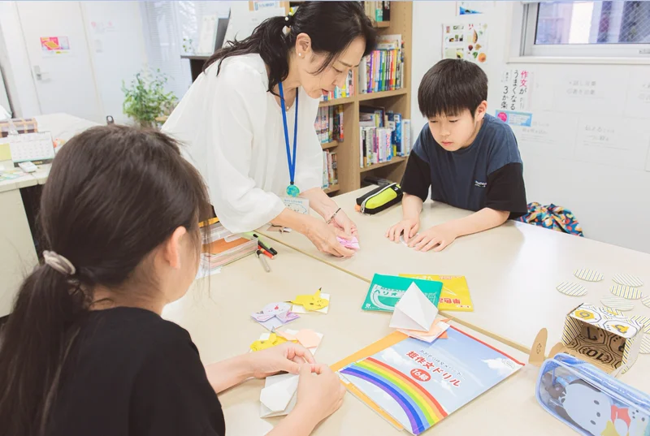

自己PRカードに
書くことがない
部長も生徒会もしていない。賞もない。「書くことがない」と言ったまま、カードが白いまま。
部長も生徒会もしていない。賞もない。「書くことがない」と言ったまま、カードが白いまま。
「やりたいことがない」と言う。親が話題にすると、けんかになってしまう。
いきなり過去問題を書かせても、1行目で止まる。人前で話すと、声が小さくなる。
推薦は「特別な子」だけの入試ではありません
都立の推薦入試は、考える力や、自分の考えを相手に伝える力を見る入試です。役職や大会の実績がなくても、毎日の経験から伝えられることがあります。
「その思い込みは、もったいない」。眞野がその理由を、動画でお話ししています。
推薦の出願には、通っている中学校の校長先生の推薦が必要です。校内の基準は中学校ごとに違うので、まず担任の先生に相談してください。
知っておきたいことを3つだけ
受検する人は全員、個人面接を受けます。ほかに作文や小論文など、学校ごとに決めた検査があります。
カードそのものに点数はつきません。面接はこのカードをもとに行われるので、書いたことを自分の言葉で話せることが大切です。
たとえば令和8年度の都立足立高校の作文は、「あきらめずに行動した経験」を書く問題でした。特別な実績より、自分の経験を具体的に書けるかが問われます。
いきなり作文を書かせることはしません。好きなこと、毎日続けていること、自分の長所と短所を、会話をしながら一緒に整理します。
そのうえで、お子さんがやりたいことと、志望校が求める生徒の姿が合っているかを確かめ、自己PRカード・作文・面接まで、本人の言葉で書いて話す練習をします。
教室は、合格を約束する場所ではありません。お子さんが自分の進路を考え、自分の言葉で伝えられるようになるまで、一緒に準備します。
合否だけでなく、自分を知り、考えを言葉にする経験になります
書くことを苦手とする子どもたちと向き合ってきた教室だから、できることがあります

いきなり書かせず、会話から材料を見つけます。好きなこと、続けていること、長所と短所。話しているうちに、本人も気づいていなかった「書くこと」が出てきます。
▶ 1分52秒から再生します
自己PRカードに書くことがない、という子の材料の見つけ方を、眞野が動画で話しています。入会の前に、教室の考え方を先生本人の声で確かめられます。
2〜5名講師1人が見る人数
1コマ120分の少人数のグループで、一人ひとりの書いたものと話し方を見ます。人前で話す練習も、少人数だから始めやすくなります。
▶ 11分45秒から再生します
思春期のお子さんは、親には本音を話しにくいことがあります。どちらが良い・悪いではありません。教室が第三者として間に入り、本人の考えを聞き出します。
1コマ120分。コマ数が多いほど、1コマあたりが安くなります
8,800円／1コマ
7,700円／1コマ
6,600円／1コマ
最大30万円塾代を無利子で
東京都の「受験生チャレンジ支援貸付」が使えるか、確かめてみてください。
塾代を上限30万円まで無利子で借りられ、対象の高校に入学して所定の手続きをすると、返済が免除されます（審査があります）。使えるかどうかは、お住まいの区の窓口が判断します。足立区の申込締切は2027年1月29日（金）です。
志望校の問題に合わせて、扱う内容を組み立てます
相談だけで終わっても大丈夫です。推薦を受けるかどうかから、一緒に考えます
ボタンから、ご都合のよい日時を選びます。Zoomのリンクがメールで届きます。
眞野が、お子さんの今の様子を伺います。推薦を受けるか、何から始めるかを一緒に考えます。
コマ数と教室を決めます。「今回は一般入試に絞る」という答えになることもあります。
話すところから始めて、自己PRカード・作文・面接へ進みます。
予約ページが開かない場合は、LINEかお問い合わせフォームからご連絡ください
2026年11/23月・祝 参加無料
足立区立小学校・中学校PTA連合会の後援で、眞野がお話しします。作文の種類と志望校が求める文章の見極め方、面接で見られる姿勢、自己PRカードの作り方（将来の夢が決まっていない場合の考え方も）を扱います。
画像を押すと、その話の始まりから再生します
塾長の眞野と、経験豊富な講師たちがサポートします

株式会社立命 代表取締役／あおぞら作文教室 塾長
眞野 玲子
推薦入試対策クラスは、眞野のほか、五反野本校では徳永茜子（東京大学教育学部卒、同大学院修士課程在学中）も担当します。ほかの講師が担当する場合もあります。
推薦の出願には中学校の校長先生の推薦が必要で、基準は中学校ごとに違います。まず担任の先生に相談してみてください。推薦では通知表の成績も点数に入りますが、面接や作文の点も合わせて見られます。
都立の推薦は、調査書・面接・作文などの合計点の順に合格が決まります。高いから落とされる、という仕組みはありません。
面接は自己PRカードをもとに行われます。カードに書いたことを、自分の言葉で話せるように準備します。
2月の学力検査（一般入試）で、同じ学校や別の学校を受けられます。推薦で合格した場合は、その学校に入学することになり、一般入試は受けられません。
10月以降に始めるご家庭が多く、12月から始める方もいます。まずは無料相談で、今からできることを一緒に考えましょう。
大丈夫です。30分の無料相談で、推薦を受けるかどうかから一緒に考えます。